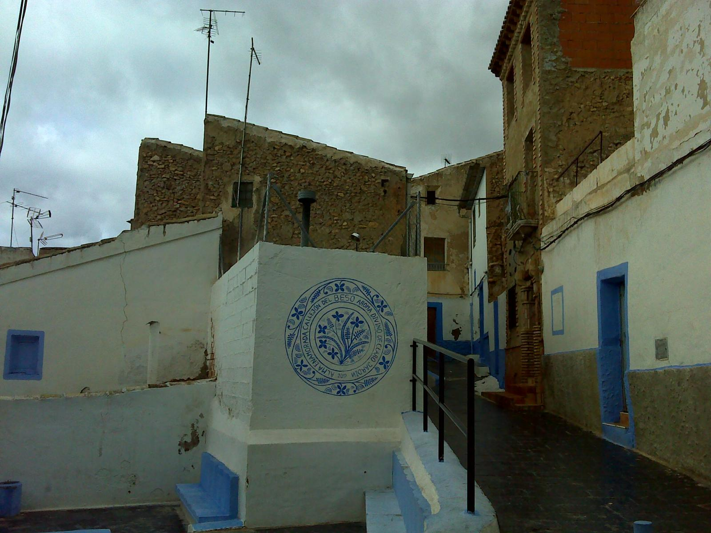

En esta sección os haremos un resumen a modo de aperitivo, una breve selección de lugares que recomendamos, encarecidamente, visitar.
Para comprender como está distribuido el casco histórico de Hellín debemos saber que en su día fue construido sobre tres colinas, de ahí que sus calles sean un constante subir y bajar entre callejuelas.
|
Como si de un buque insignia se tratase, el castillo almohade del siglo XVI coronaba de una de esas tres colinas. Una pena que gran parte de lo que fuera una importante estructura defensiva, se haya ido perdiendo con el tiempo y ahora tan solo conservemos algunos vestigios de sus muros y una de sus torres. |
|
|
 |
Una de las calles más emblemáticas y reconocidas por todos los habitantes de Hellín. Y es que además de ser conocida como la calle más estrecha de Hellín, es conocido por todos los hellineros la historia que cuenta que el rey Carlos I se estuvo alojando en esta calle que en el pasado albergaba casas señoriales. |
|
El Santuario de Nstra. Señora del Rosario fue contruido entre XVIII y XIX y está situado en la misma colina del Castillo. Pero su origen es una ermita mudéjar después de la reconquista. Y lo que hoy día tenemos es una reconstrucción, en honor a la patrona de Hellín, Nuestra Señora del Rosario |

|
Por último, como recomendación, os dejamos el museo comarcal, el cual se encuentra también en este casco histórico tan emblemático, con lo cual es fácil de añadir a tu ruta o incluso topartelo de casualidad en un paseo por sus calles. |